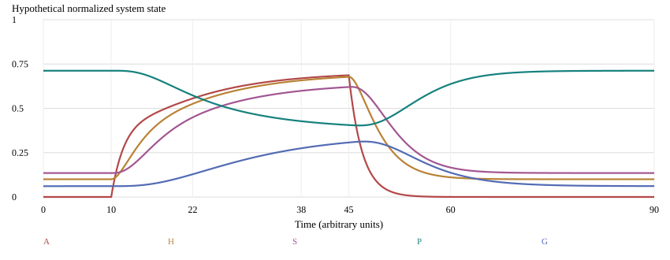
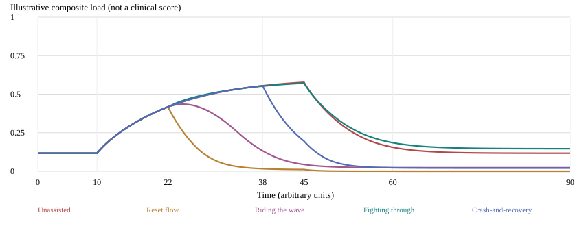
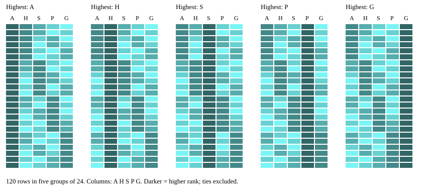

Ryan Espinosa
November 8, 2026
The abstract on the next page is Ryan’s original text, preserved verbatim apart from spacing. Some sentences make stronger biological claims than current evidence supports. The main text explicitly distinguishes those authorial proposals from established findings and corrects the endocrine shorthand without changing the abstract.
Five illustrative system labels organize the model; a sixth, “never-fails,” names a proposed integrative regulatory role rather than an identified brain region. Numerical simulations demonstrate consequences of chosen assumptions, not clinical efficacy.
All credit and glory to God. I owe my knowledge to my Lord Jesus Christ.
This paper proposes a neurophilosophical framework — the Void-State Model — that bridges physical neuroscience with philosophical inquiry into emotional experience, personality structure, and behavioral response. Drawing on five established neural substrates, we identify five fundamental emotional-neural systems: the amygdala ("alarm-fire"), the hypothalamus ("stress-pump"), the periaqueductal gray ("freeze-mode"), the prefrontal cortex ("control-center"), and the sympathetic nervous system ("high-energy surge"), with a sixth stabilizing archetype designated "never-fails." Each system is mapped to a corresponding personality archetype defined by its dominant neural signature and characteristic behavioral expression.
Central to this model is the concept of the void-state — a neurologically grounded condition of affective emptiness, characterized by anhedonia, motivational suppression, and the paradoxical activation of threat-detection circuitry in the absence of external stimulus. We argue that the void-state is not merely a symptom of depressive pathology but a fundamental mode of brain operation — a baseline from which survival, aggression, panic, and recovery responses are launched. The amygdala's interpretation of internal emptiness as threat initiates a cascade: hypothalamic adrenaline release, sympathetic activation, prefrontal suppression, and periaqueductal gray-mediated freeze response, producing the subjective experience of paralysis, heart palpitations, and dissociation from reality.
The paper further examines four behavioral strategies through which the five personality archetypes navigate the void: (1) the reset flow, a coordinated multi-system stabilization response; (2) riding the wave, a surrender-based integration of all five systems through the void's momentum; (3) fighting through, a volitional, friction-based push against the void using directed neural force; and (4) crash-and-recovery, an acknowledgment that some void encounters are inevitable and that re-entry into reality follows a predictable neural sequence. Each strategy is analyzed through the lens of its corresponding personality archetype's dominant response pattern.
Finally, we explore the ordinality and permutation space of the five emotional-neural systems, noting that 120 distinct rank-orderings exist — each representing a unique hierarchy of emotional activation that may correspond to distinct clinical presentations, personality profiles, or situational response patterns. This combinatorial structure offers a novel framework for understanding individual differences in emotional regulation, stress response, and resilience.
The Void-State Model offers a unified language for neuroscience and philosophy, with potential applications in clinical psychology, mental health intervention design, and the study of emotional dysregulation in populations experiencing mania, depression, and trauma.
Keywords: void-state, neurophilosophy, emotional architecture, personality archetypes, amygdala, prefrontal cortex, affective neuroscience, emotional regulation, mental health, ordinality of emotion
“Emptiness” can describe diminished pleasure, lack of motivation, emotional numbness, uncertainty, loneliness, or altered self-experience. These are overlapping but non-equivalent phenomena. The Void-State Framework asks whether some episodes involve a coupling between low perceived reward, internal threat appraisal, arousal, reduced cognitive flexibility, and defensive immobility. It offers a vocabulary for inquiry, not a new disorder.
The abstract’s claim that the void is a neurologically established baseline is Ryan’s hypothesis. No cited source establishes a single universal void-state, and absence of an obvious external threat does not mean absence of a cause: interoceptive signals, memories, expectations, sleep, substances, and illness can matter. The five chosen systems are not an exhaustive partition of the nervous system.
MindFrame’s nine movers separated fear, sadness, anger, shame, calm, connection, hope, rumination, and avoidance as reflective categories. Ariel represented layered thought, a retained origin, and collapse to one Input–Output line. After the Line then separated preserving an anchor from transmitting it to action. The present model shifts the question from signal transfer to coordination under low-reward, high-threat conditions.
In that lineage, “never-fails” resembles an anchor-preserving design role, not an invulnerable person. A local journal could label experiences and chosen responses without inferring amygdala activity or assigning diagnoses. Earlier heuristic coefficients are not reused as physiological measurements.
Amygdala nuclei participate in learning about significance and coordinating defensive responses. They do not equal the subjective experience of fear. LeDoux and Pine distinguish defensive circuitry from conscious fear and anxiety [1]. The claim that an amygdala “reads emptiness as threat” is a proposed interpretation of internal cues, not an established specialized emptiness detector.
The hypothalamus helps coordinate endocrine, autonomic, and homeostatic processes [3,11]. The abstract’s phrase “hypothalamic adrenaline release” is shorthand that needs correction: hypothalamic CRH helps activate pituitary ACTH and adrenal-cortical cortisol release through the HPA axis. Sympathetic preganglionic pathways activate the adrenal medulla to release adrenaline/epinephrine through the sympathetic–adrenomedullary (SAM) system. These interacting pathways have different mechanisms and time courses. The hypothalamus is not the peripheral adrenaline source.
The SNS is a distributed autonomic division, not one brain region. Sympathetic and adrenal responses can contribute to mobilization and palpitations, but palpitations alone do not identify a psychological cause. Nor does SNS activation imply aggression, mania, or a specific personality. Parasympathetic influences and cardiorespiratory context are omitted from the toy system.
Prefrontal subregions support working memory, planning, appraisal, and regulation, among other functions. Arnsten describes stress-related impairment of prefrontal function through neurochemical mechanisms [2]. “Suppression” here means a hypothetical reduction in regulatory availability, not the cortex switching off. Effort can be helpful or costly depending on task, dose, and context.
Bandler and Keay describe columnar organization of the PAG and integrated patterns of emotional expression [4]. PAG functions extend beyond freezing to active defense, pain modulation, and autonomic coordination. Freezing is not identical to paralysis, fainting, tonic immobility, or dissociation. A fixed amygdala → hypothalamus → SNS → PFC → PAG chain is not established; real circuits are reciprocal and parallel.
Panksepp’s affective-neuroscience program emphasizes interacting emotional systems, not a one-region/one-personality lookup [5]. Treadway and Zald distinguish reward-related components of anhedonia, including motivation and pleasure [6]. The void-state therefore should not be operationalized by a single emptiness question alone.
Sierra and Berríos developed the Cambridge Depersonalisation Scale (CDS) to assess depersonalisation experiences [7]. Feeling unreal is not direct evidence of PAG activation. The model below does not generate a measured dissociation variable, and cannot establish that depersonalisation is the final step of an arousal cascade.
Porges’s polyvagal perspective offers an influential autonomic narrative [8]. Its evolutionary and physiological claims are disputed: Grossman and Taylor discuss confounds in respiratory sinus arrhythmia (RSA) and critique aspects of the evolutionary account [9]. This paper does not equate HRV with safety, moral resilience, or “dorsal-vagal shutdown.”
| System label | Proposed archetype | Reflective pattern—not a trait test |
|---|---|---|
| A · alarm-fire | The Sentinel | Notices risk; may over-prioritize ambiguity. |
| H · stress-pump | The Mobilizer | Organizes urgency and bodily demand. |
| G · freeze-mode | The Shelterer | Pauses or withdraws to reduce exposure. |
| P · control-center | The Director | Plans, reframes, and sustains chosen action. |
| S · high-energy surge | The Surger | Acts rapidly; effort may exceed resources. |
| Integrative role | “Never-fails” | Coordinates return, revision, and support. |
We propose an integrative regulatory role that maintains the possibility of returning to a chosen anchor, rather than guaranteeing a successful outcome. It may be enacted through reflection, relationships, rest, or professional support. No sixth neural substrate is claimed. In the simulation it is represented by an externally specified regulatory input r(t), not an additional state variable or discovered organ.
All archetype names beyond Ryan’s supplied labels are drafting proposals. People can occupy multiple roles across situations. “Never-fails” must not imply blame when symptoms persist. Ryan’s Christian dedication expresses faith; the model does not test salvation, divine action, or spiritual worth.
Let A, H, S, P, and G ∈ [0,1] denote hypothetical threat appraisal, stress coordination, sympathetic mobilization, regulatory capacity, and defensive immobility. P is available control; the other four are load-like variables. These are abstractions, not firing rates or hormone concentrations. Let C(x) = min(1, max(0,x)), applied separately to each target.
The imposed internal input v(t) is called void-onset for illustration, not measured anhedonia. u terms reduce the corresponding targets; r increases regulatory support; f adds mobilizing effort with a small control cost. Feedback from S to A permits amplification; P inhibits A and moderates G. The G equation explicitly builds in the hypothesized coupling—it does not discover it.
| PARAMS | Values / rule |
|---|---|
| Time constants (A,H,S,P,G) | (2, 3, 2.5, 4, 5) arbitrary time units |
| Initial states | (0, 0.10, 0.135, 0.712, 0.061) |
| Void input | v = 0.8 from t = 10 to 45; zero otherwise |
| Integration / duration | Simultaneous forward Euler; Δt = 0.02; T = 90 |
| Recording interval | 0.2 arbitrary time units; deterministic, no noise |
Because Δt ≤ min τ, each update is a convex combination of the previous state and a bounded target, preserving [0,1] from bounded initial conditions. That establishes numerical boundedness, not realistic physiology. Halving Δt changes final states by at most 3.95 × 10⁻⁶ across the five simulated cases; this checks the reported end points, not all trajectory errors.

Figure 1. Unassisted trajectory. A responds to input onset at t = 10; H and S rise, P declines, and G increases more slowly. The input ends at t = 45. Timing was built into coupling and time constants; no empirical neural order is inferred.
Interventions begin at t = 22 unless otherwise noted. The composite load L = [A + H + S + G + (1 − P)]/5 is an arbitrary equal-weight summary, not a validated symptom score. Its “improvement” is partly defined by the same assumptions used to construct the interventions.
| Strategy | Specified simulation inputs |
|---|---|
| Reset flow | r = 1; (uᴬ,uᴴ,uˢ,uᴳ) = (0.25,0.20,0.25,0.15). |
| Riding the wave | w = min[1,(t − 22)/12]; r = 0.6w; uᴬ = 0.35w; uˢ = uᴳ = 0.12w; uᴴ = 0. |
| Fighting through | r = 0.7; f = 0.3; all u = 0. |
| Crash-and-recovery | No added support until t = 38; then r = 1, uᴬ = uˢ = 0.25, uᴳ = 0.20, uᴴ = 0. |
All unspecified inputs are zero. Interventions persist through T = 90, including after the void input ends. “Crash” denotes delayed assistance in this numerical example; it is not induced collapse, proof that deterioration is inevitable, or advice to wait for a crisis. “Directed neural force” in the abstract is metaphorical; no physical force is measured.
The reset input has more direct channels of support than the fighting-through input. Thus any ranking is confounded by input choice and intensity. A fair intervention comparison would require matched burdens, empirical calibration, and sensitivity analysis. The present run does not claim a best clinical strategy.

Figure 2. Composite load under the five schedules. “Unassisted” is a mathematical comparator, not a recommendation to withhold care. Reset and wave schedules reduce several targets by construction.
| Condition | Mean L, t = 22–60 | P at t = 40 | G at t = 40 |
|---|---|---|---|
| Unassisted | 0.433 | 0.420 | 0.286 |
| Reset flow | 0.054 | 0.995 | 0.004 |
| Riding the wave | 0.165 | 0.945 | 0.022 |
| Fighting through | 0.440 | 0.605 | 0.282 |
| Crash-and-recovery | 0.298 | 0.653 | 0.193 |
Reset flow: the Sentinel, Mobilizer, and Surger receive simultaneous attenuation while the Director receives support; the Shelterer is permitted to disengage. This is the integrative “never-fails” role expressed as coordinated input.
Riding the wave: a gradual schedule represents noticing internal change without adding urgent effort. The Sentinel’s appraisal changes progressively, while the Shelterer and Surger are not forced into an immediate reversal. It is not helpless surrender or a promise that symptoms always pass unaided.
Fighting through: the Director receives support while the Surger’s load rises. Here P improves but mean L slightly exceeds unassisted load; functional persistence and bodily strain can diverge in the model. Other parameter choices could reverse this result.
Crash-and-recovery: the Shelterer remains engaged longer; later coordinated support allows gradual re-entry. Neither a fixed recovery order nor a predictable human time course follows. Every archetype can participate in every strategy; there is no exclusive strategy-to-personality assignment.
For five distinct labeled quantities with no ties, there are 5! = 5 × 4 × 3 × 2 × 1 = 120 strict rank orderings. Python’s itertools.permutations generated all 120, and a uniqueness assertion verified the count. Each highest-ranked system defines a purely combinatorial group of 4! = 24 orderings.

Figure 3. Exhaustive rank map of all 120 permutations. Darker cells denote higher ranks. Rows are lexicographic within five top-ranked groups; this is a categorical grouping, not an empirical clustering analysis.
| Highest-ranked system | Number | One possible descending ordering |
|---|---|---|
| A | 24 | A > H > S > P > G |
| H | 24 | H > A > S > P > G |
| S | 24 | S > A > H > P > G |
| P | 24 | P > A > H > S > G |
| G | 24 | G > A > H > S > P |
Ranked activation magnitude is different from temporal onset order. Moreover P denotes regulatory capacity, not “control loss”; a P-first rank is not a high-load profile. Comparing scales would require a defensible within-person normalization. Even then, rank ignores distance, duration, and coupling: 0.81 versus 0.80 should not be treated as meaningfully distinct without measurement precision.
Ties, uncertainty, and unobservable regional states can make many orderings indistinguishable. Some orderings may never occur or may occur within a single episode. The 120 count does not establish 120 diagnoses, personality classes, or interventions. Exported permutations.csv contains the full enumeration for inspection.
Proposed observational feasibility study: 40 consenting adults, 14 days of voluntary brief experience sampling, with a clinician-advised protocol and ethics review before recruitment. This sample is a practical pilot target, not powered proof. Do not provoke trauma recall, sleep loss, mania, severe emptiness, or collapse. People with acute safety concerns need appropriate care, not study tasks.
Use simple within-person-centered mixed models with uncertainty intervals and person-clustered resampling where feasible. Pre-register primary associations, missing-data handling, and comparisons against independent-symptom and reciprocal models. Do not estimate a full neural network or classify 120 profiles from 40 people. No single questionnaire or wearable provides the five neural variables.
In clinical psychology, the framework could organize a conversation about emptiness, mobilization, regulation, and withdrawal. Intervention designers might separate low-effort stabilization from demanding action prompts, then test acceptability and benefit with active comparators. These are research uses, not established treatment indications.
Depression, mania, and trauma-related conditions are heterogeneous and require clinical assessment. Anhedonia can arise without this cascade; mania is not simply high SNS activity; trauma responses do not all end in freeze or dissociation. No diagnostic cutoff, medication decision, or prognosis follows from the model. New or severe palpitations, loss of consciousness, or neurological symptoms require medical evaluation.
Keep personal journal entries local by default. Study data would require explicit separate consent, coded identifiers, minimal collection, defined retention, and an accessible withdrawal process. No covert monitoring or automatic personality assignment. A human-reviewed distress plan must define pausing, referral, and limits of researcher monitoring.
The Void-State Framework is most defensible as a neurophilosophical hypothesis generator. Its contribution is a transparent separation of experience, proposed coupling, narrative role, and measurable prediction. An honest next step is to test whether that separation improves understanding—not to declare a universal emotional architecture already proven.
[1] LeDoux, J. E., & Pine, D. S. (2016). Using neuroscience to help understand fear and anxiety: A two-system framework. American Journal of Psychiatry. doi:10.1176/appi.ajp.2016.16030353.
[2] Arnsten, A. F. T. (2009). Stress signalling pathways that impair prefrontal cortex structure and function. Nature Reviews Neuroscience, 10, 410–422. doi:10.1038/nrn2648.
[3] McEwen, B. S. (1998). Protective and damaging effects of stress mediators. New England Journal of Medicine. doi:10.1056/NEJM199801153380307.
[4] Bandler, R., & Keay, K. A. (1996). Columnar organization in the midbrain periaqueductal gray and the integration of emotional expression. Progress in Brain Research, 107, 285–300. doi:10.1016/S0079-6123(08)61871-3.
[5] Panksepp, J. (1998). Affective Neuroscience: The Foundations of Human and Animal Emotions. Oxford University Press. Bibliographic/chapter record: doi:10.1093/oso/9780195096736.003.0001.
[6] Treadway, M. T., & Zald, D. H. (2011). Reconsidering anhedonia in depression: Lessons from translational neuroscience. Neuroscience & Biobehavioral Reviews, 35, 537–555. doi:10.1016/j.neubiorev.2010.06.006.
[7] Sierra, M., & Berríos, G. E. (2000). The Cambridge Depersonalisation Scale: A new instrument for the measurement of depersonalisation. Psychiatry Research. doi:10.1016/S0165-1781(00)00100-1.
[8] Porges, S. W. (2007). The polyvagal perspective. Biological Psychology, 74, 116–143. doi:10.1016/j.biopsycho.2006.06.009.
[9] Grossman, P., & Taylor, E. W. (2007). Toward understanding respiratory sinus arrhythmia: Relations to cardiac vagal tone, evolution and biobehavioral functions. Biological Psychology, 74, 263–285. doi:10.1016/j.biopsycho.2005.11.014.
[10] Snaith, R. P., et al. (1995). A scale for the assessment of hedonic tone: The Snaith–Hamilton Pleasure Scale. British Journal of Psychiatry, 167, 99–103. doi:10.1192/bjp.167.1.99.
[11] OpenStax. Introduction to Behavioral Neuroscience, §12.2, Neural Mechanisms and Circuitry of the Stress Response. Open-access textbook section. Accessed 8 November 2026.
Bibliographic records and accessible abstracts/summaries were verified on 8 November 2026; this is not a systematic review. Sources support the limited background claims, not the proposed archetypes, void-state baseline, coefficients, or strategy schedules. Espinosa’s MindFrame, Project Ariel, After the Line, and the supplied abstract are project provenance, not external validation.
Grok Bot, an AI assistant, assisted with literature verification, drafting, mathematical formalization, Python execution, figures, and rendering. All simulation data are synthetic. Reproducibility files: simulate_void.py, results.json, convergence.json, five trajectory CSVs, permutations.csv, three SVG figures, paper.html, and build.py. No human study has been conducted.